The slide of the lecture is on the left, the same figure or table on the right, computed in the browser from the same data. The ▶ button moves the parameter step by step; the tables and worked examples are recomputed with it. Abbreviations: BTC (Bitcoin), ETF (exchange-traded fund), IBIT (iShares Bitcoin Trust), USDT (Tether), USDC (USD Coin), DAI (Dai), UST (TerraUSD), SVB (Silicon Valley Bank), FDIC (Federal Deposit Insurance Corporation), ACF (autocorrelation function), VR (variance ratio), HAC (heteroskedasticity- and autocorrelation-consistent standard errors), GARCH (generalised autoregressive conditional heteroskedasticity), GJR (the asymmetric GARCH of Glosten, Jagannathan and Runkle), IGARCH (integrated GARCH), AR(1) (autoregressive process of order 1), CI (confidence interval), HS (historical simulation), VaR (value at risk), ES (expected shortfall), TE (tracking error), bp (basis points), i.i.d. (independent and identically distributed).
Bitcoin and Ethereum in Brief · Crypto as an Asset Class · Tails and Volatility Clustering · Is the Crypto Market Efficient? · Correlation with Equities and Gold · Bubbles and Crashes · Spot Bitcoin ETFs · Stablecoins · The Risk of a Crypto Position
Bitcoin and Ethereum in Brief
Bitcoin Price and Supply
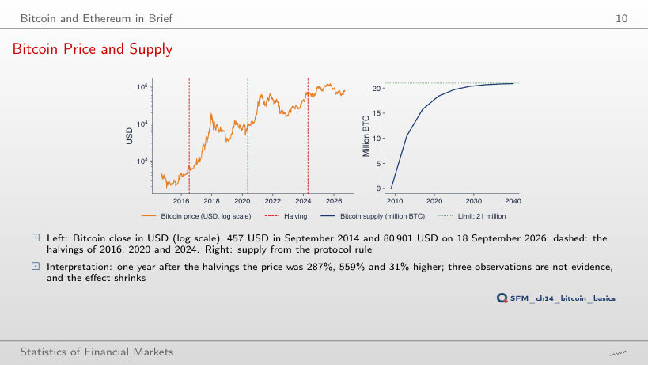
Answer
By 3.7%, against 31% after one year. For the 2016 and 2020 halvings the 180-day changes are 56% and 72%. The change after a date known in advance depends strongly on the horizon chosen, and three observations allow no conclusion: in an efficient market, an announced cut in supply is already in the price.
Crypto as an Asset Class
Annualisation with the Actual Frequency (2/2)
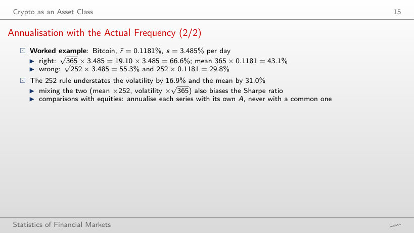
Worked example: annualisation with the actual frequency
Answer
By 16.9% = 1 − √(252/365): 55.3% instead of 66.6%. The mean is understated more, by 31.0% = 1 − 252/365 (29.8% instead of 43.1%), because the mean scales with A and the volatility only with √A.
Five Assets Side by Side
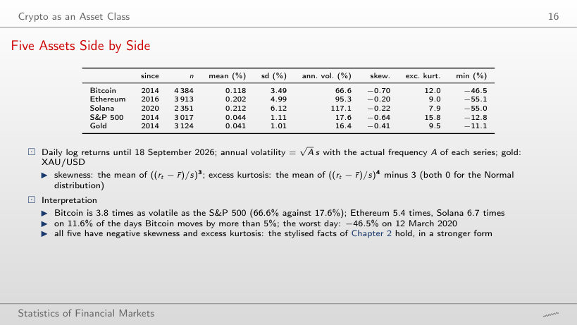
Statistics of the daily log returns (the table of the slide)
Answer
3.1 times (47.5% against 15.2%), against 3.8 times on the whole sample; Ethereum 4.5 times, Solana 5.2 times. Bitcoin’s volatility has fallen, but the ratio stays large.
Volatility Through Time
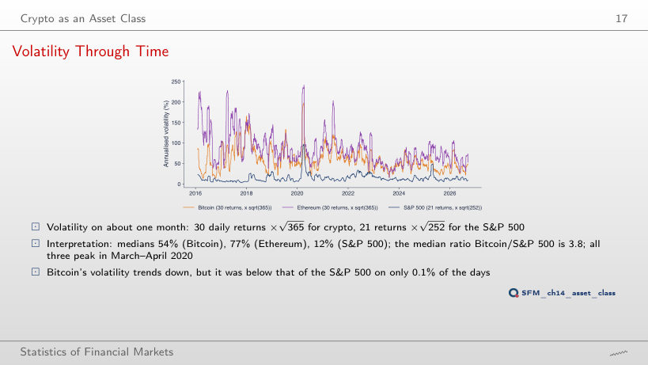
Answer
On 3.8% of the common days, against 0.11% with the 30-day window. On 7 returns the estimates are much noisier, so the two curves cross more often, although the median ratio stays 3.9.
Bitcoin Volatility by Day of the Week
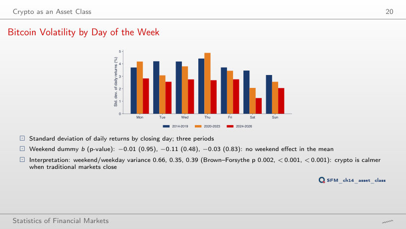
Answer
In 2022: 0.30 (Brown–Forsythe p < 0.001), then 2023 (0.31) and 2024 and 2026 (0.32). Before 2020 the ratio was closer to 1: 0.66 in 2015 and 0.89 in 2016. The weekend mean is not significantly different from the weekday mean in any year.
Tails and Volatility Clustering
Heavy Tails: the Hill Estimator (2/2)
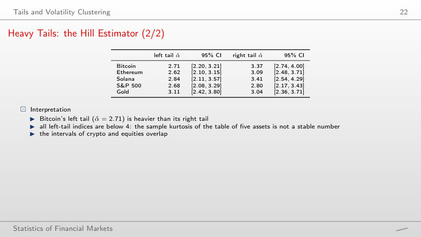
Hill tail indices (the table of the slide)
Answer
It falls to 1.83 (k = 438), from 2.71 with k = 2.5%; with k = 1% it rises to 3.83. A large k takes in observations from the centre of the distribution, where the power law does not hold, and the estimate falls; k = 2.5% of n is a choice, not a result.
Reading the ACF and the Ljung–Box Test
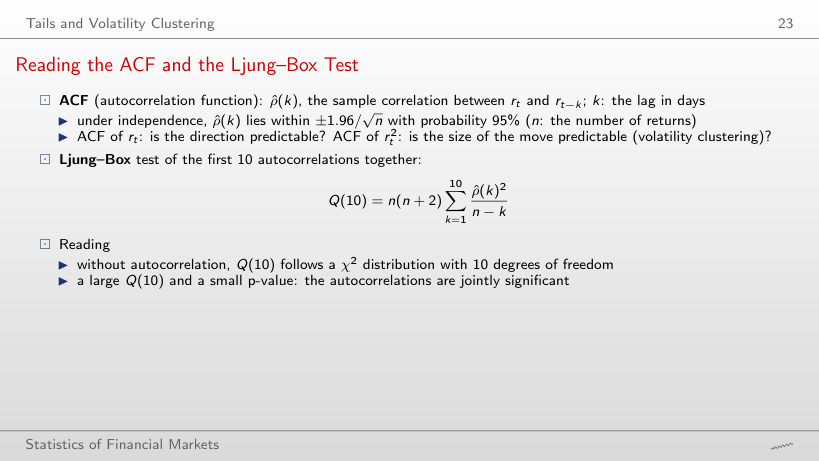
The Ljung–Box Q(m) of rₜ and rₜ², with p-values
Worked example: the Ljung–Box statistic
Answer
From m = 10: Q(10) = 20.2 against the critical value 18.3. At m = 12 it is not (20.6 < 21.0), nor at m = 30 (43.5 < 43.8). The autocorrelations of the returns are small, so the verdict depends on the number of lags; for rₜ² Q(m) exceeds the critical value at every m.
Volatility Clustering in Bitcoin
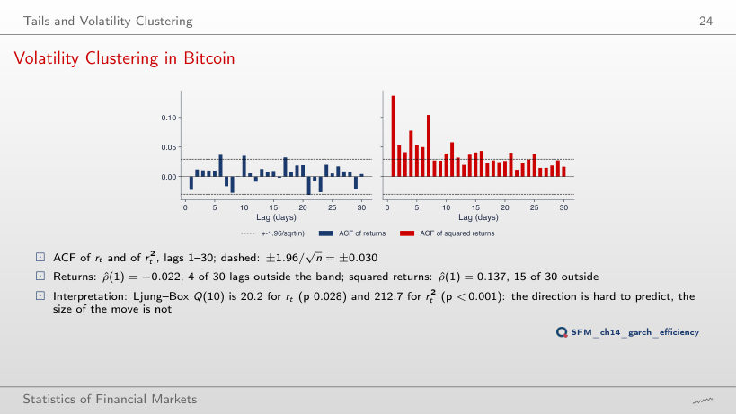
Answer
The S&P 500: ρ̂(1) = 0.451, then Solana 0.247, Ethereum 0.175, Bitcoin 0.137 and gold 0.090. Volatility clustering is not about the level of volatility: equities have a lower volatility, but one that is more persistent from one day to the next.
GARCH(1,1)-t for Crypto and Traditional Assets (2/2)
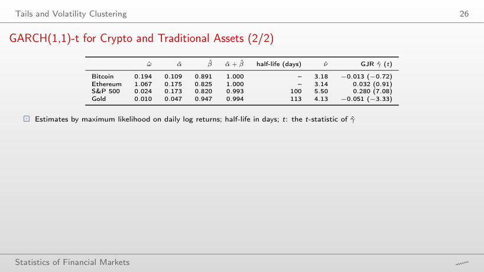
GARCH(1,1)-t and GJR estimates (the table of the slide) and the share of a shock left
Worked example: the half-life of a shock
Answer
About 25%: 0.9931²⁰⁰ = 0.251, two half-lives of 100 days. For gold 29% is left, for Bitcoin practically 100%, because α̂ + β̂ = 1.
Conditional Volatility: Bitcoin and the S&P 500
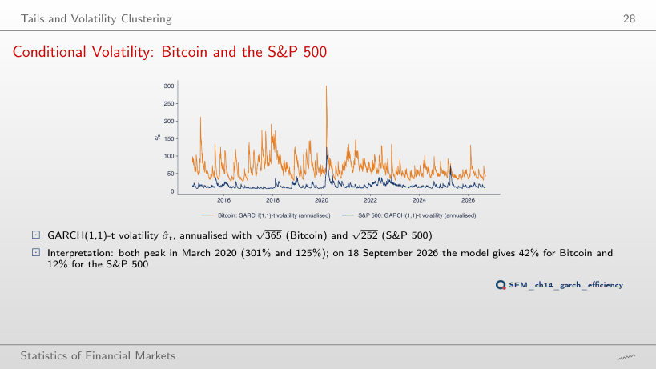
Answer
About 169%, from 54% for the next day. With α̂ + β̂ = 1 the forecast variance grows by ω̂ = 0.194 every day, with no return to a long-run level. For the S&P 500 the forecast rises from 11.5% to 28.4%, towards the long-run level of 29.4%.
Is the Crypto Market Efficient?
Variance-Ratio Tests on the Whole Sample
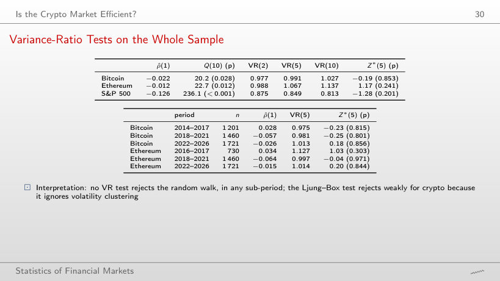
Whole sample (the first table of the slide)
Sub-periods (the second table of the slide)
Answer
Yes, for the S&P 500: Z*(2) = −2.30 (p 0.022), because VR(2) = 0.875 ≈ 1 + ρ̂(1) reflects the daily mean reversion of the index. Bitcoin (−0.88) and Ethereum (−0.43) do not reject. The rejection comes from the market seen as the most efficient, not from crypto.
Efficiency Through Time
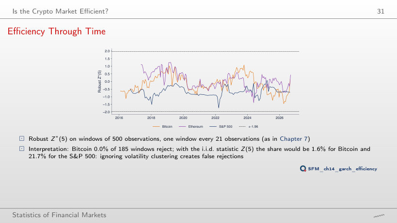
Answer
About 50% (50.5%), against 21.7% with windows of 500, and still 0% with the robust Z*. A longer window gives more power to a wrong test: ignoring volatility clustering creates false rejections.
Correlation with Equities and Gold
Measuring Correlation Across Calendars
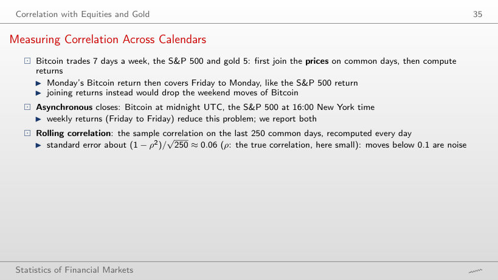
Worked example: the correlation on one rolling window
Answer
Above: 0.67, on 25 October 2024. The standard error near ρ = 0 is 1/√60 = 0.13, against 0.063 with 250 days: short windows give more extreme values.
Rolling Correlation with Equities and Gold
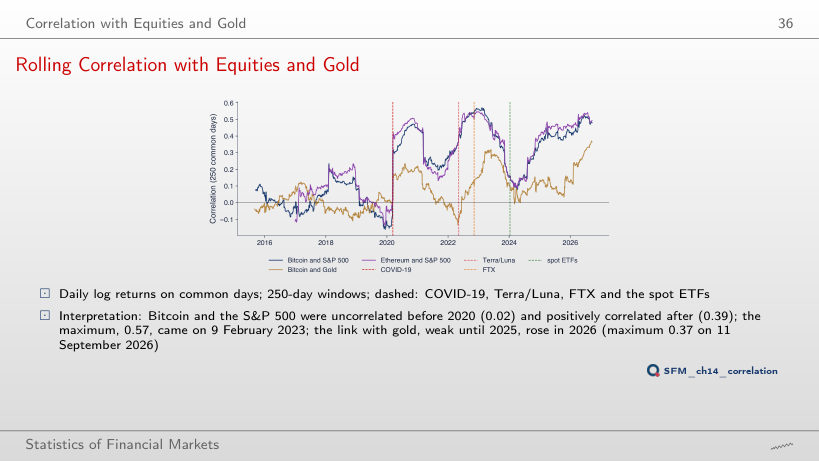
Answer
About 0.25, on 18 September 2026, against 0.37 on 11 September 2026 with 250 days. The long window mixes 2026 with 2024–2025, when the correlation was 0.12, so the rise of 2026 is diluted.
Correlation Year by Year
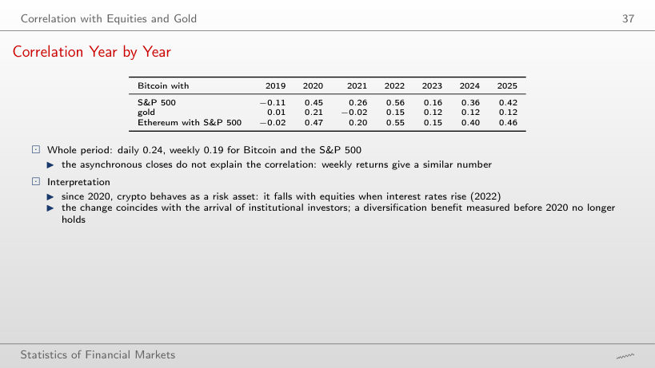
Correlation year by year (the slide shows 2019–2025)
Answer
Lower: 0.43 against 0.56; over the whole period 0.19 against 0.24. Asynchronous closes would lower the daily correlation, not the weekly one; one year has only about 50 weekly returns, so the estimate is noisier.
Three Crisis Episodes
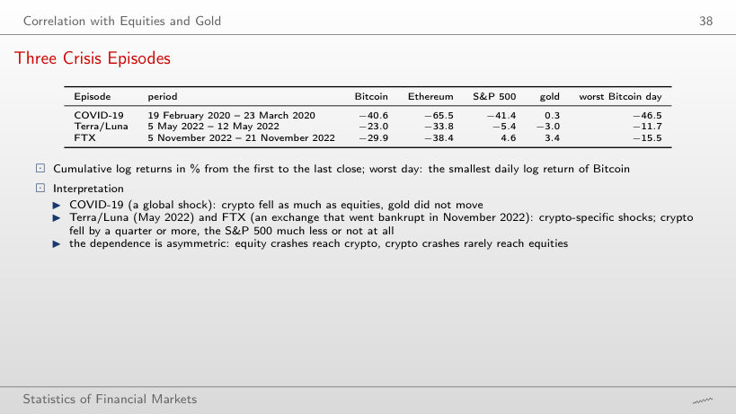
Cumulative log returns (%), the table of the slide
Answer
It rose by 4.6%, and gold by 3.4%, while Bitcoin lost 29.9% and Ethereum 38.4%. A shock specific to crypto did not reach equities.
Hedge or Safe Haven?
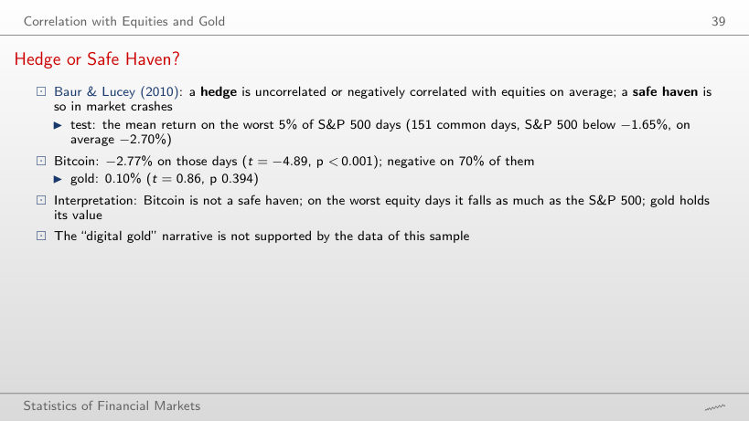
Worked example: the safe-haven test
Answer
−0.39% (t = −1.27, p 0.215), not significantly different from zero on those 31 days, while Bitcoin has −6.30% (t = −3.23, p 0.003). Gold holds its value, without rising on the hardest days.
Bubbles and Crashes
Drawdown
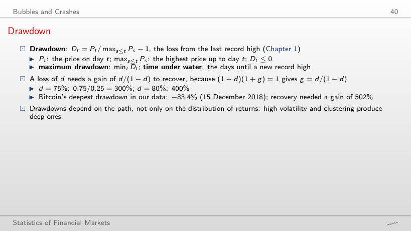
Worked example: the maximum drawdown and the gain needed
Answer
1,556% = 0.940/0.060: from 6.0% of its record value it has to rise about 16.6 times. Ethereum was back at its record on 2 February 2021.
Drawdowns of Bitcoin, Ethereum and the S&P 500
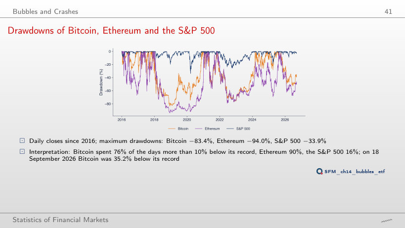
Answer
−66.9%, against −83.4% since 2016. The drawdown is measured from the highest price in the sample, and the peak of November 2021 is no longer in it. Ethereum −74.1%, S&P 500 −25.4%.
Bitcoin's Large Drawdowns
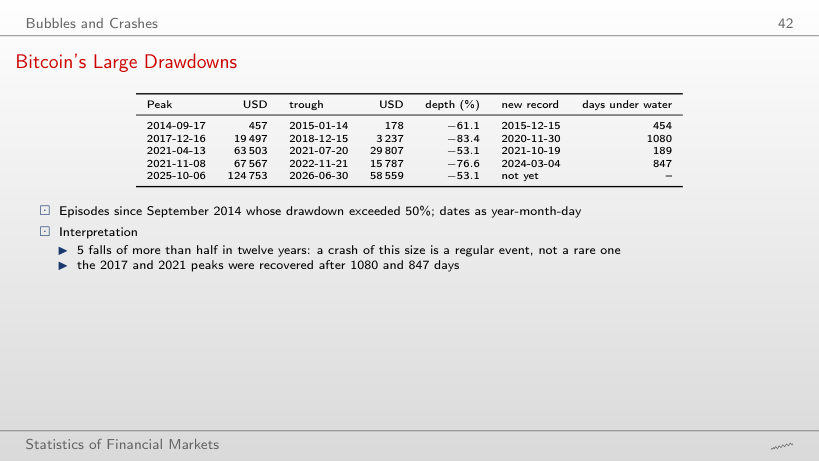
Bitcoin episodes since September 2014 (the table of the slide)
Answer
Eight: three falls of 2017 (−32.6%, −34.8% and −35.5%), recovered within months, join the five of the slide.
Spot Bitcoin ETFs
Volatility and the Weekend Share Around the ETFs
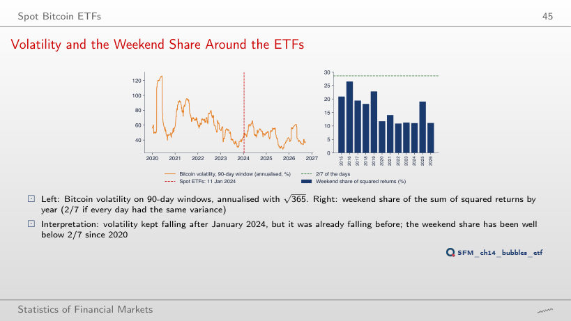
Answer
In 2025: 19.0%, against 10.9–14.0% in the other years; still below 2/7 = 28.6%, the value for an equal variance on every day.
Before and After: a Simple Comparison
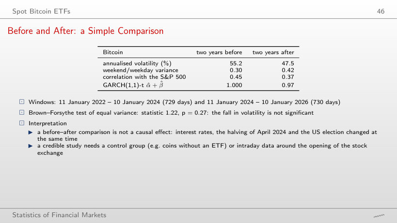
Bitcoin before and after 11 January 2024 (the table of the slide)
Answer
Yes (p 0.001), but volatility rose, from 44.4% to 52.9%. With 2.5 years it is also significant (p 0.008), in the opposite direction (57.2% to 48.0%), and with two years it is not (p 0.27). The result depends on the window, so the before–after comparison does not measure a causal effect of the ETFs.
How Well Does an ETF Track Bitcoin?
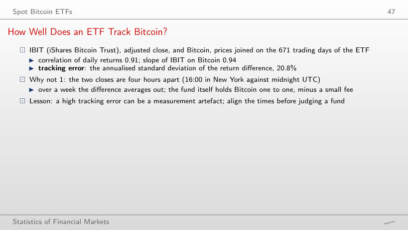
Worked example: tracking error
Answer
8.9% a year, with a correlation of 0.98, against 20.8% for daily returns. The gap between the New York close and the midnight UTC close averages out within days.
Stablecoins
Supply of Stablecoins
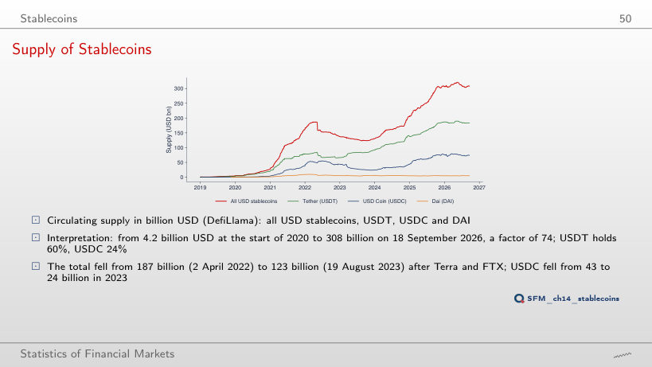
Answer
By 34.5% = 1 − 122.7/187.4. On the slides the total on 18 September 2026 is 308 billion USD; the download of 4 November 2026 gives 303 billion for the same date, because DefiLlama revises its history.
Peg Deviation in Basis Points
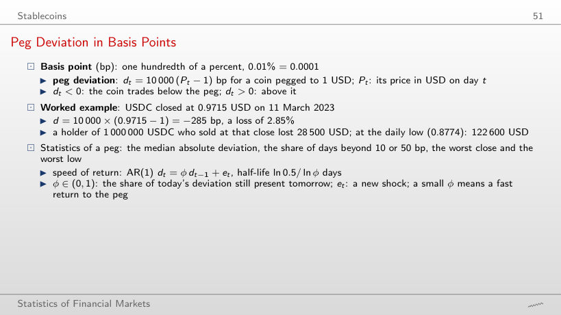
Worked example: the peg deviation and the loss
Answer
−1,030 bp = 10,000 × (0.8970 − 1), that is −10.3%. The USDC low on the same day was −1,226 bp.
Peg Deviations of USDT, USDC and DAI
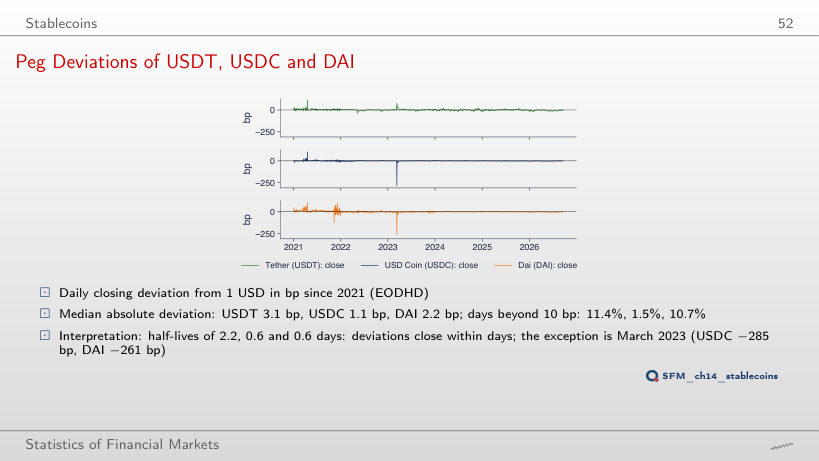
Peg statistics since 2021 (the numbers of the slide)
Answer
On 0.57% of the days (12 of 2,087), against 0.14% for USDT and for USDC; at the 10 bp threshold the shares are 10.7%, 11.4% and 1.5%.
The USDC Depeg, Day by Day
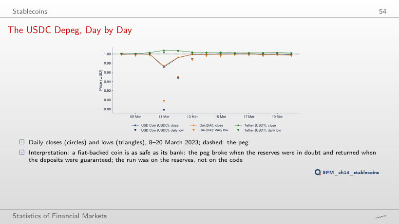
Answer
At 0.9989 USD, that is −11 bp, back near the peg after the guarantee of the SVB deposits on the evening of 12 March (U.S. Treasury, Federal Reserve & FDIC, 2023). On 11 March the close had been 0.9715 (−285 bp). USDT closed at +39 bp on 13 March.
The Collapse of UST, May 2022
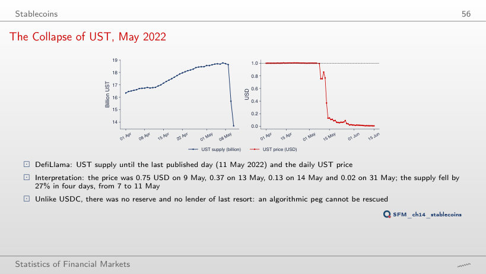
Answer
By 27%, from 18.8 to 13.7 billion UST, in four days. The price fell further: 0.75 USD on 9 May, 0.37 on 13 May and 0.02 on 31 May.
The Risk of a Crypto Position
VaR 1% and ES 2.5% in Dollars
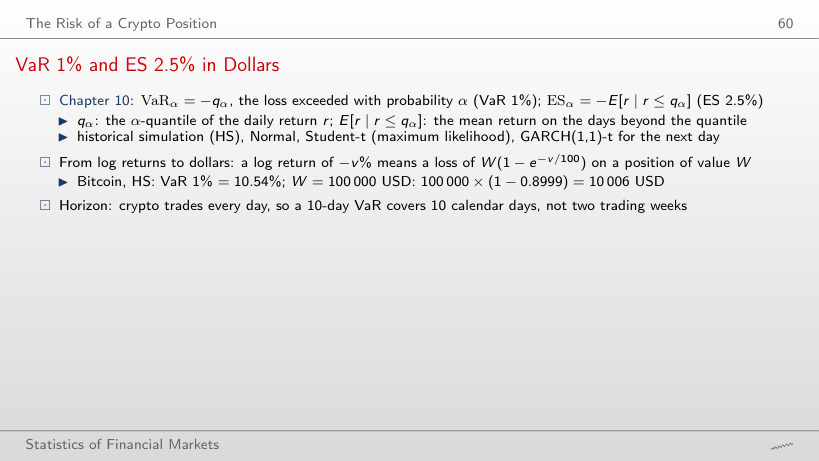
Worked example: from the log return to dollars
Answer
32,037 USD = 1,000,000 × (1 − e^(−0.03256)). Read as a simple return, the same number would give 32,562 USD.
Four Methods, Three Assets
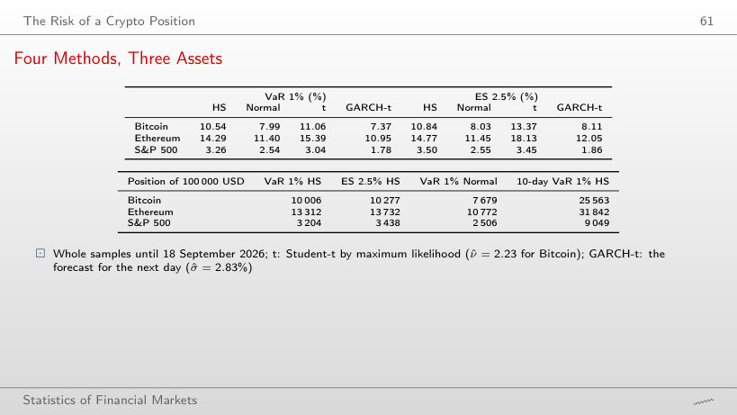
VaR and ES in percent (the first table of the slide)
In USD, for a position of 100,000 USD (the second table of the slide)
Answer
No: 5.62% against 5.33% historical, 5% above. Bitcoin’s distribution has heavy tails and a more peaked centre than the Normal distribution: at 1% the Normal distribution understates the loss (7.99% against 10.54%), at 5% it overstates it.
Interpretation of the Risk Numbers
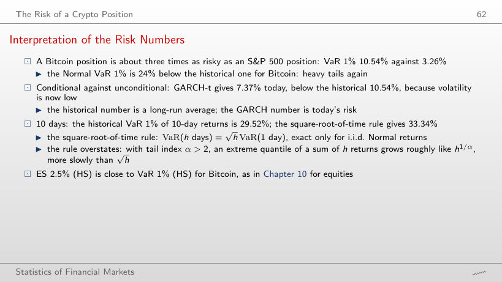
Worked example: the square-root-of-time rule
Answer
More: 57.7% against 48.2%, 20% above. With a tail index between 2 and 4, the extreme quantiles of sums grow more slowly than √h.
Backtesting: the Kupiec Test
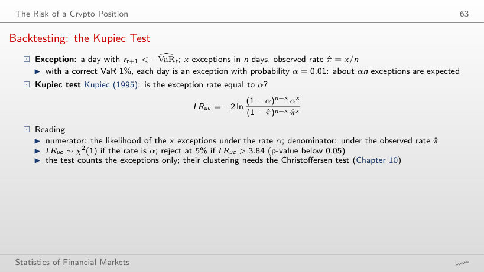
Worked example: the Kupiec test
Answer
From 22 to 43. HS (29) and GARCH-t (41) are inside; 41 is near the edge (LR_uc = 2.45, p 0.12). The test also rejects too few exceptions, not only too many.
Backtesting Bitcoin VaR 1%
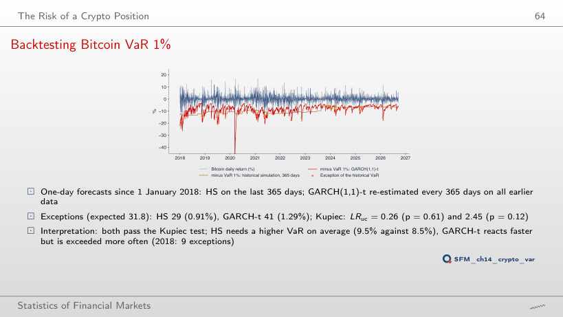
Answer
It rejects, for too few exceptions: 21 (0.66%), p 0.04. The long window keeps the losses of 2018–2022 and gives a mean VaR of 10.1%, too large for the calmer years.
Course data in data/market (up to 18 September 2026): daily closes of Bitcoin, Ethereum, Solana, the S&P 500, gold (XAU/USD) and the IBIT ETF; daily closes and lows of USDT, USDC and DAI since 2021. The stablecoin supply and the TerraUSD series come from DefiLlama, downloaded with the chapter’s function on 4 November 2026 and cut at 18 September 2026; where the download differs from the values on the slides, the page shows both. The GARCH(1,1)-t and GJR estimates, the conditional volatilities, the Student-t fits and the GARCH-t forecasts of the backtest come from the code of the chapter (Quantlets/Ch_14). From the prices the browser recomputes the returns, the descriptive statistics, the Hill indices, the ACF and the Ljung–Box test, the variance ratios, the correlations, the drawdowns, the weekend and safe-haven tests, the peg deviations, VaR, ES and the Kupiec test. Other windows, thresholds, horizons, periods and levels α are extra runs of the same code; the GARCH persistence on ETF windows of 1, 1.5 and 2.5 years is an extra estimation with the chapter’s code, and the multi-day GARCH forecasts and the share of a shock left are extra computations from the estimates on the slide.